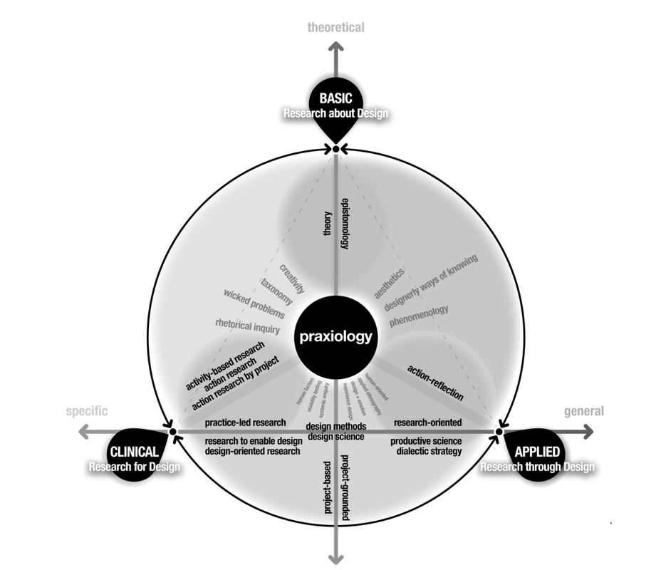

In his book, Designerly Ways of Knowing, Nigel Cross provides a concise background of events in the twentieth century that contribute to the contemporary discourse about design research (2007a: 119-127). He conjectures that the systematic 1920’s Modern Movement designers, such as Le Corbusier, established the groundwork for the1960’s Design Methods Movement. It was believed that design methodology could prescribe an orderly, systematic procedure for arriving at a design solution through “diagnosis followed by prescription” (Downton,2003: 39; Gedenryd,1998).
According to Henrik Gedenryd, the 1962 Conference on Design Methods established design methodology, the procedures or methods for designing, as a valid scientific research subject (1998: 19). This view was disseminated by other design thinkers including Christopher Alexander, John Chris Jones, Buckminster Fuller, and Herbert Simon (Alexander,1964; Downton,2003; Jones,1970; Simon,1969; Zung,2001). In 1966 the founding of the Design Research Society in England, and later initiation of the Design Studies Journal further supported this perspective. The approach remained influential throughout the 1970’s and persists to today. More publications dedicated to this sort of design research emerged; Design Issues in 1984, Research in Engineering Design in 1989, the Journal of Engineering in Design in 1990, Languages of Design in 1993, and the Design Journal in 1997 (Cross,2007b: 47; Downton,2003: 41).
1981 Bruce Archer published Systematic Methods for Designers providing guidelines for generating objective knowledge for “design, composition, structure, purpose, value and meaning of human-made things and systems” (Bonsiepe,2007: 27). Archer describes the science of design research as:
In contrast, in the early 1970’s some design researchers, including John Chris Jones and Christopher Alexander, began to reject the design science approach. Rittel and Webber posed the most severe challenge with their concept of wicked problems, which pointed out, among other things, how inadequate a sequential structured methodology was for understanding complex design problems (Cross,2007b: 42; Gedenryd,1998: 57). There are ten characteristics of “wicked problems” that make them ill defined, including the impossibility of formulating an exact problem due to the complexity of evolving variables that make it difficult to arrive at one definite solution (Buchanan,1992; Downton,2003: 43; Rittel,1973: 161-167). Wicked problem theory presented an alternative to the scientific approach that had been attributed to design research.
According to Cross, “method may be vital to the practice of science (where it validates the results) but not to the practice of design (where results do not have to be repeatable, and in most cases, must not be repeated, or copied)” (2007b: 43). Cross also notes that, in 1983, the late MIT professor, Donald Schön “explicitly challenged the structured doctrine underlying much of the ‘design science’ movement, and offered instead a constructivist paradigm1” (Cross,2007a: 123). Schön says:
I begin with the assumption that competent practitioners usually know more than they can say. They exhibit a kind of knowing-in-practice, most of which is tacit…Indeed, practitioners themselves often reveal a capacity for reflection on their intuitive knowing in the midst of action and sometimes use this capacity to cope with the unique, uncertain, and conflicted situations of practice (1983: viii).
Schön was developing his theory much like a social scientist does, based on an analysis of actual design processes, rather than forcing them to fit into prescribed and structured methodologies. Simultaneously, social science researchers were beginning to apply ethnographic field research into the work activities and local knowledge of technologically connected work communities to help designers better understand the needs of their users (Frankel,2009a; Wasson,2000:380). These approaches continue to influence industrial designers today.
Buchanan says, “What I believe has changed in our understanding of the problem of design knowledge is greater recognition of the extent to which products are situated in the lives of individuals and in society and culture” (2001:14). Now, according to Buchanan, a significant challenge is “to understand how designers may move into other fields [such as the social sciences] for productive work and then return with results that bear on the problems of design practice” (2001: 17). This idea seems radical in comparison to preceding approaches to design research, but represents the crux of complexity in current design research considerations.
As noted earlier, today’s prevalent interpretation of design research focuses more on processes for prescribing designed products and fails to provide an explanatory framework for the subjects of design content, the designer, and the design context (Dorst,2008: 5). According to Forlizzi, Stolterman, and Zimmerman the design community is taking note and design research and design practice are evolving “new design theories and new theories of design” (2009: 1). This paper aims to chart the prevailing design research theories discussed in the literature, but first it is important to establish a common ground by discussing design and design research.
There is no single common definition of design and some definitions even seem to contradict each other. Many design theorists talk about the activity of design as separate from the artifact and the designer, albeit undertaken by designers. Guy Julier places a material culture emphasis on “Design”– as the designed artifact which has been raised to elite cultural status in the media and business interests (2008: 103). On the other hand, Sanders, sees design as a distributed collaborative activity for researching conceptualizing, and developing improved or innovative products in which the designer no longer plays an expert role (2008: 13). Indeed, the word “design” is both a verb and a noun (Friedman,2000: 8; Gedenryd,1998: 43; Glanville,1999: 81; Julier,2008: 4; Lawson,2003: 3). The verb comes from the Latin root designare meaning to specify and the noun comes from the root signum meaning sign or specification (Gedenryd: 42). Therefore in this paper, design is an activity for planning and implementing new products, which includes the byproducts of the processes involved such as drawings, models, plans, or manufactured objects.
The research activity related to design is exploratory, and is both a way of inquiring and a way of producing new knowledge (Cross,2007a: 52; Downton,2003: 1). According to Buchanan the approaches to new design knowledge can be broken into the three categories recognized by universities, corporate and governmental funding agencies (Buchanan,2001: 17; Friedman,2000:18). These form the basis of the taxonomy presented here and are discussed in greater detail below:
Clinical research focuses on design problems that are specific and individual cases requiring information for that unique situation. For example, the design of a particular walking aid for one company would require research specific to that project, that would involve gathering wide-ranging information about users, environments, materials, and competitive products. This sort of research may be documented in a case study or journal article. The common trait of case studies is that they assemble information or data that may give insight into problems that reach beyond the individual case (Buchanan,2001: 18; Friedman,2000).
Applied research focuses on investigating general classes of design problems or products. The common trait of applied research is the [systematic] attempt to gather from many individual cases a hypothesis or several hypotheses that may explain how a class of products takes place, the kind of reasoning that is effective in design for that class (Buchanan,2001: 18). An example of applied research occurs in the area of inclusive design, which focuses on classes of design problems that may exclude users of different abilities (Keates & Clarkson,2003). This sort of research, developed through long-term academic investigation, often generates the kind of knowledge that designers can apply in their clinical research (Downton,2003). Buchanan thinks that applied research is critical to advancing the understanding of design because it can establish connections among many individual cases (2001: 19). Buchanan and Friedman both stress the importance of systematic inquiry (Buchanan, 2001: 18; Friedman 2000: 19).
Basic research focuses on empirical examination of fundamental principles that lead to developing theories about design that has far-reaching implications for the discipline (Buchanan,2001). Bruce Archer developed a series of design topics worthy of basic –and, in some cases, applied– research investigations: Design taxonomy, for example was to focus on the classification of phenomena (observable activities) in the design area; design praxiology referred to the nature of design activity, its organization and its apparatus; while design epistemology was to be concerned with identifying special designerly ways of knowing, believing, and feeling (in Margolin,2002: 247). Nigel Cross adds another category to Archer’s list: design phenomenology which is “the study of the form and configuration of artefacts” (2007b: 48).
Bruce Archer had a strong influence on several design researchers; especially on Nigel Cross who uses Archer’s lecture notes to provide a current description of what good research is:
based on identification of an issue or problem worthy and capable of investigation
seeking to acquire new knowledge
conducted from an awareness of previous, related research
planned and carried out in a disciplined manner
generating and reporting results which are testable and accessible by others (2007a: 126)
Since Cross points out that these features are not unique to design research, the next section looks at those that are much more closely aligned to design.
This section attempts to align the approaches discussed in the literature, building on the previous discussion about clinical, applied, and basic research areas. The literature refers to three categories of design research, attributed to Sir Christopher Frayling who apparently derived them from Herbert Read (Archer,1995 as transcribed by Rust in 2009; Frayling, 1993:2; Friedman, 2008; Newbury, 1996:2). They are: research for design; research through design; and research about design (Archer,1995; Cross,2007a; Downton,2003; Findeli,1999; Frayling,1993; Friedman,2003; Jonas,2007). These map closely with the three categories of clinical, applied, and basic research.
Downton, whose book, Design Research, is organized according to Frayling’s three categories, calls this area “research to enable design”. This research area provides the information, implications, and data that designers can apply to achieve an end-result in their design projects (Downton,2003; Forlizzi et al.,2009). Downton describes this category as primarily prescriptive research methods for specific and feasible design solutions. He gives an example of a Cadillac design team that purchased and dissected a BMW to examine its inner workings (2003: 20). He also identifies some kinds of data that apply to clinical design research: “establishing pertinent regulations & standards, finding the appropriate formulae, finding meterological data, finding performance specs of materials or equipment, obtaining data on human physical characteristics & understanding human behaviour” (2003: 22-28).
According to Archer, “There are circumstances where the best or only way to shed light on a proposition, a principle, a material, a process or a function is to attempt to construct something, or to enact something, calculated to explore, embody or test it” (1995: 11). He calls this approach “Action Research” (also called practice-led research by Rust, 2007, activity-based research by Kumar and Whitney, 2003, design-oriented research by Fallman, 2005, and action research-by-project by Archer, 1995), after Frayling, or “systemic enquiry conducted through the medium of practical action; calculated to devise or test new, or newly imported, information, ideas, forms or procedures and generate communicable knowledge” (1995: 11). The practical action approach includes usability testing or user testing, in which methods are used to “measure a [specific] product’s ability to satisfy the needs of the end user (accessibility, functionality, ease of use) while also meeting project requirements (budget, size, technical requirements)” (Visocky O'Grady,2006: 52).
Notably, research for design is the category of research that most practitioners and many academics associate with the term “Design Research,” perhaps because it has the most potential to contribute to successful design outcomes (Dorst,2008; Friedman,2003; Roth,1999). This singular focus warrants some explanation. According to Friedman, “ in today’s complex environment”, a designer is charged with rapidly progressing from identifying problems to realizing solutions, usually in multi-disciplinary teams. He argues that, in addition to traditional visual and material skills, designers require the capability to analyze, synthesize, organize, and evaluate within specific and uniquely different clinical situations. Design practice is therefore closely linked to research training even though “no single individual can master this comprehensive background stock of knowledge” (2003: 511). As noted earlier, since design research is a more recent phenomena in academia few practitioners have been trained in research methods (Friedman,2000: 15; Roth,1999: 18). In this category, both quantitative and qualitative research methods may be appropriate (Roth,1999: 22- 25).
Quantitative research involves objective and systematic data collection and analysis in the form of quantitative measures that are statistically valid, and fits well within a design science paradigm. Quantitative research is associated with unbiased logic, measurement, and separation between the researcher and the subjects (Sanghera,2007). In this case the size of the sample population has to be large enough to be able to accurately predict and generalize the results to the population at large (Ladner,2007). Roth provides some examples of quantitative research: written surveys; demographics; statistical analyses; anthropometrics; structural testing; and standardized tests (Roth,1999: 23).
According to Denzin and Lincoln, editors of the Sage Handbook of Qualitative Research, “qualitative researchers study things [and people] in their natural settings, attempting to make sense of, or interpret, phenomena in terms of the meanings people bring to them” (Denzin & Lincoln,2005: 3). Qualitative research can include: observation/notation; personal interviews; diaries and self-reporting; video ethnography; focus groups; contextual inquiry; and activity analysis (Denzin & Lincoln,2005: 3; Roth,1999: 22). Qualitative research is subjective since it focuses on describing and interpreting people’s meaningful experiences though the eyes of the people involved and it does not matter how many people are included in the sample (Ladner,2007). Qualitative research is associated with discovery, description, understanding and shared interpretation in which the researcher-personal biases and values- is part of the process (Sanghera,2007).
Design consultants Jenn and Ken Viscocky O’Grady note that researchers may use primary research methods (original research that they generate) or secondary research (research findings that have been previously published by an outside party) (2006: 19). They also explain the concepts of formative (aids in problem identification and problem solving) and summative (aids in framing and deciphering the outcome of an investigative process) research (2006: 20).
Many of the methods briefly mentioned in this section could generate findings that are relevant beyond the scope of one clinical situation, but often they are inadequately developed in practice. How does this practical research become knowledge in the field of design, especially when the particular processes employed in contractual research for design are often protected by non-disclosure agreements? The discussion about research through design begins to address this issue.
The literature is divided about the meaning of Frayling’s ambiguous phrase “research through design” (Jonas,2007: 190). Findeli differentiates it from research for design by associating “through design” with theory and “for design” with practice (1995: 2). Jonas considers research through design the only genuine research paradigm because it is here that new knowledge is created through an action- reflection approach (2007: 189-192). In this approach, the emphasis is on the research objective of creating design knowledge, not the project solution. This may also be called project-grounded research and/or research-oriented design (Fallman,2003; Findeli,1995: 2; Jonas,2007: 192). According to Schneider, research through design may combine the practice-based research approach of practitioners with reflection and a research question that “is not restricted to the product on which research is being conducted” (Schneider,2007). His view is similar to that stated by Friedman:
Design is both a making discipline and an integrated frame of reflection and inquiry. This means, that design inquiry seeks explanations as well as immediate results”(2000: 20).
The most important aspect of research through design is that it seeks to provide an explanation or theory within a broader context. Buchanan calls this a “Dialectic Strategy” (2007: 57). To Downton, the value of this kind of investigative theory is that it explains and also becomes “ a vehicle for acquiring and shaping knowing” that assists in future design activities (2003: 77). Buchanan calls it “Productive Science” and includes the study of form and function in relation to human activity, as well as the study of materials (2007: 63).
This category is unique for several reasons: it is derived from and valuable for practice; it is growing rapidly; both practitioners and researchers are contributing significantly to the literature and on-line discussions; the discussion is extensive, addressing hundreds of approaches; and much of the subject matter has been derived from the social sciences, business, and marketing. Systematic design methodologies form much of the literature in the research through design category (Buchanan,2007; Cross,2007b; Dubberly,2005).
In recent years, human-oriented design methods feature prominently as a separate area of research in the current design discourse (Hanington,2003; Roth,1999; Rothstein,2000; Sanders,2006, 2002; Squires & Byrne,2002; Woo,2007). In her evolving map of design research methods, Sanders represents the range of attitudes towards human-oriented design, from the expert mindset and the participatory mindset, in both research-led and design-led inquiries. In the more traditional expert approach, such as in human factors (also called ergonomics), she says design researchers see themselves as experts and they see the people they are researching (and designing for) as “subjects,” “users,” “consumers,” etc. Whereas the Scandinavian inspired participatory approach sees design researchers collaborating with the people, who are being served by design, as co-creators in the process (2008:13-15). Other human-centered research areas that fit into her model include “design and emotion” that investigates people’s emotional interactions with products (Design & Emotion,2009; Green & Jordan,2002) and “experience design” that focuses on the relationship between people and their experiences with products, services, events, and environments (User Experience,2009; Woo,2007: 3-4). Brenda Laurel’s book, Design Research: Methods and Perspectives is one of many that present human-oriented methods adapted “from the applied social and behavioral sciences and/or from engineering: human factors and ergonomics, applied ethnography, and usability testing” (Holzblatt & Beyer,1998; Laurel,2003; Sanders,2008: 14).
At The Institute of Design at Illinois Institute of Technology, graduate students working with Professor Vijay Kumar and Vincent LaConte have assembled a poster documenting ninety-three methods, indicating where they belong in the following five iterative design modes: definition (sense context); research (know context and know users); analysis (frame insights); synthesis (explore concepts and frame solutions); and realization (make plans) (Kumar, LaConte, & Students,2007). The Design Consultancy IDEO has published the IDEO Methods Cards documenting fifty-one techniques for researching human-centered issues (Moggridge,2007). While these methodologies are applied in clinical research, they belong in the design through research section because they are part of the general theoretical knowledge base about how to do design research. In addition research can also investigate and generate knowledge about fundamental design epistemologies, as discussed in the next section.
Findeli describes much of the research about or into design as the work that is “carried out under the heading of other disciplines (sociology, psychology, semiotics, economics, history, etc of design” (1995: 2). He appears to believe that this represents the most prevalent kind of design research available. According to Schneider, the research areas include history of design, aesthetics and design theory, as well as the analysis of design activity (2007).
Buchanan calls this area of research “design inquiry” and he sees it as searching for “an explanation in the experience of designers and those who use products” (2007: 58). He breaks this into two categories: “the discipline of designing” and “creativity of the designer”. Cross also believes this area addresses “the nature of design activity, design behaviour, and design cognition” (Cross,2007a). He focuses much of his research on “designerly ways of knowing,” which is discussed in considerable depth in the design research literature (Bonsiepe,2007; Dorst & Cross,2001). Findeli and Cross acknowledge the importance of understanding the unique forms of knowledge that contribute to designers’ creative skills and awareness (Cross,2007b: 46; Findeli,1995: 3). Dorst and Cross break down designerly activities into a long list of meta-activities (such as creating ways to keep on learning from their design activities, creating a view about design quality, and constructing a design argument, among others). They also identify characteristically different approaches to design problems for designers with different ranges of experience and discuss how they work together (Cross,2007a: 12, 46, 51; Dorst,2008: 9 & 10).
Another fascinating area in which substantial research has been done is in defining the design problem3, which falls into the category of designerly ways of knowing. In his PhD thesis, Henrik Gedenryd points out that while a designer is expected to solve a problem, in fact “producing the problem is the [significant] work that the designer must do” (1998: 69-70). Lawson, in reference to Rittel and Webber’s “wicked problem” theory, says that, “it seems more likely that design is a process in which problem and solution emerge together” (2003: 47). Buchanan refers to the process of discovering the problem as “rhetorical inquiry”, which is partly verbal and partly in “the sketches, models, and prototypes that are characteristic of design work” (2007: 64). Schön calls this activity “problem setting” in which, “we select what we will treat as the “things” of the situation, we set the boundaries of our attention to it, and we impose upon it a coherence which allows us to say what is wrong and in what directions the situation needs to be changed” (Schön,1983: 40). Dorst and Cross refer to this as “defining and framing the problem” (2001: 431-432). Cross, Dorst, Downton, and Gedenryd adopt Schön’s view that the sketches, models, and other primarily visual representations designers develop while evolving their concepts are “reflective conversations with the situation” (Dorst & Cross,2001; Downton,2003; Gedenryd,1998).
In addition to these traditional explorations, designers may also raise questions that are not characteristic of other disciplines because often the answers are translated into form, colour, and the objects that surround us. This affords practitioners, students, and educators with the challenge to produce discipline specific knowledge that may be communicated by drawings, sketches, models, and other visual representations embodying non-verbal codes or messages as well (Cross,2007a; Dörner,1999; Downton,2003; Lawson,2003; Stappers,2007).
There are additional areas of investigation that have not been covered in this brief overview that are also part of the body of knowledge that is design research. The following section brings together the many approaches discussed in this paper.
In his paper, Creating design knowledge: from research into practice, Ken Friedman asks, “How does new knowledge move from research into practice”(: 1). He goes on to answer:
Concrete research results become visible to practitioners in a myriad of ways. Journal results, conferences, corridor talk among colleagues, knowledge transfer in shared projects, Internet discussion groups. The important issue is that a field must grow large enough and rich enough to shape results and circulate them. As this happens, the disciplinary basis of the larger field also grows richer. This leads to a virtuous cycle of basic results that flow up toward applied research and to clinical applications. At every stage, knowledge, experience and questions move in both directions…Practice tends to embody knowledge. Research tends to articulate knowledge (2000: 23).
Building on Friedman’s thinking, the following map represents the relative positions of the categories and subcategories discussed so far in this paper. It illustrates the flow between research for design, research through design, and research about design as a circular process, each informing the other.
While these categories of design research are interrelated, they also represent different levels of design knowledge. Downton writes about three kinds of knowledge: “how-to-knowledge” (a person demonstrating she knows how to draw) “knowing-that” knowledge (a person learning about how someone else draws), and “knowledge-of” (a person has peripheral knowledge that people can draw) (2000: 62). He goes on to say that, “Design theories are concerned with what design is, what it should be and what it could be” (2003: 79). From this perspective, one could expect to engage in design research at any of these levels and in a variety of combinations, depending on the initial question or hypothesis. With such a multifaceted range of options, is it any wonder that the discourse is as extensive as it is?
A visit to the PhD-DESIGN List serve4 brings up many threads of discussion that run through this paper. It has become the central clearing house for current issues related to the academic relationship with design research–many of the key design researchers mentioned here share their explanations, perspectives, and evolving thinking. While that may validate the content of this literature search the list doesn’t make sense in and of itself. The discussion threads often provide uncontextualized snippets of information. In response, this map illustrates the increasingly complex approaches to design research.
The multiple perspectives for describing design research in the literature are signs of healthy growth and of a field that is advancing to face the challenges of our times, rather than becoming overwhelmed by them. This paper develops a frame of reference that endeavors to organize the information found in the literature, primarily to develop insight into the complex field of research: for design, through design, and about design. It draws from the wide range of activity in the area of design research that is fueling the discourse and spreading design research knowledge. The initial historical overview provides a context for understanding the foundations of design research, which have been an ongoing part of the process since design emerged as a field on its own in the early twentieth century. In spite of the relatively short history of research and design, the foundation for thinking about contemporary design issues has been firmly established and promoted by many dedicated academics and practitioners, not all of whom share the same taxonomies. The complexity is not merely a matter of taxonomy; it is also a matter of breadth. The wide range of research approaches discussed in this paper are used to varying degrees in the pursuit of knowledge that is either specific to a design project, relevant to a class of design problems, or fundamental to the very nature of design.
The model presented here aims to provide a framework that will evolve along with the field of design research. By relating Frayling’s terms –design for, about, and through research– to those of contemporary funding bodies–clinical, applied, and basic– and of current practice this paper attempts to provide continuity, while sorting out the different points of view.